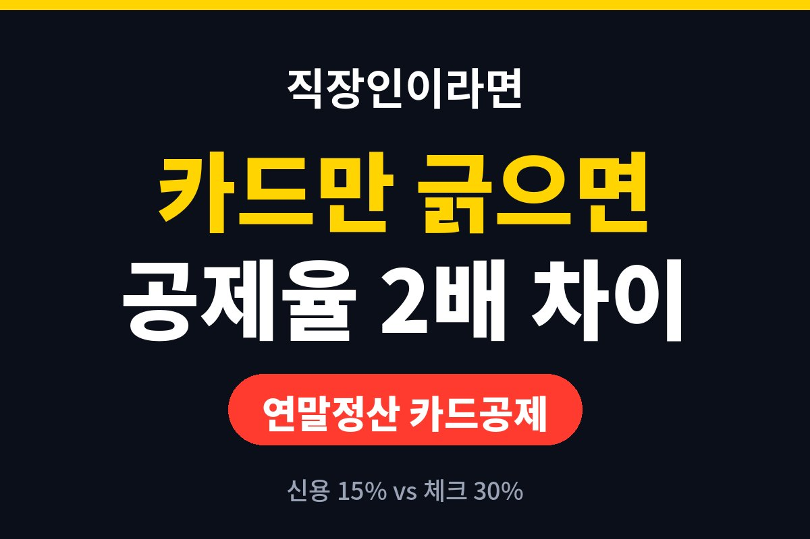
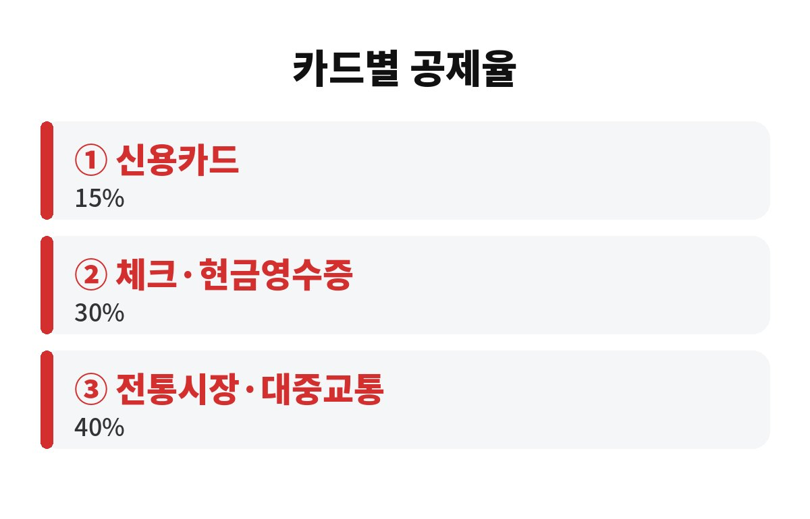
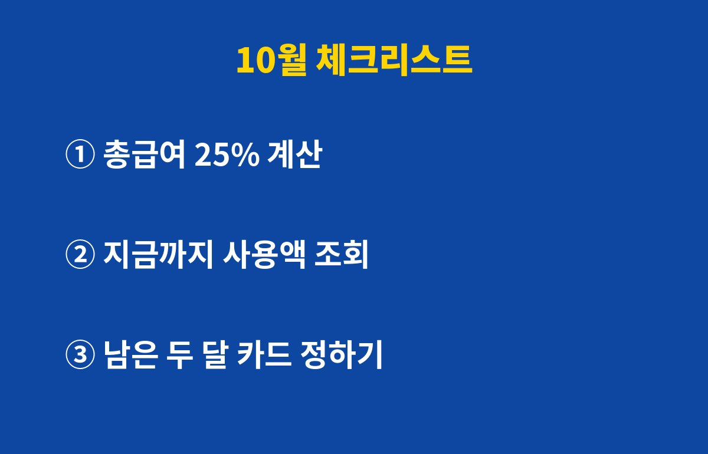

연말정산 카드공제는 신용카드 15%, 체크카드·현금영수증 30%로 공제율이 정확히 2배 차이 납니다. 신용카드만 긁어온 직장인이라면 지금 10월에 무엇을 바꿔야 환급이 늘어날지 궁금하시죠?
네, 있습니다. 카드공제는 쓴 돈 전부를 빼주는 제도가 아니에요. 총급여의 25%를 넘게 쓴 부분부터 공제 대상이 됩니다. 연봉(총급여)이 4,000만원이라면 1,000만원까지는 아무리 긁어도 공제가 0원이라는 뜻이죠.
그래서 연말정산 카드공제의 첫 단계는 내 문턱이 얼마인지 계산하는 겁니다. 총급여에 0.25를 곱하면 끝이에요. 이 금액을 넘기기 전까지는 어떤 카드를 쓰든 공제액이 같으니, 문턱 전에는 혜택 좋은 신용카드를 쓰고 문턱을 넘긴 뒤부터 체크카드로 갈아타는 전략이 가장 알려진 방법입니다.
문턱을 넘긴 100만원을 썼다고 가정해 볼게요. 신용카드로 썼다면 15만원, 체크카드나 현금영수증이면 30만원이 소득에서 빠집니다. 이 금액은 세금이 아니라 세금을 매기는 소득에서 빼주는 금액이라서, 실제 환급은 여기에 내 세율을 곱한 만큼입니다.
예를 들어 세율 구간이 15%인 직장인이라면 소득공제 15만원은 약 2만원, 30만원은 약 4만원 정도 환급으로 이어지는 식이죠. 한 번에 보면 작아 보이지만, 문턱을 넘긴 소비가 수백만원이면 차이는 꽤 벌어집니다. 대중교통과 전통시장은 공제율이 40%로 더 높으니 자주 이용한다면 꼭 챙기세요.
| 구분 | 공제율 |
| 신용카드 | 15% |
| 체크카드·현금영수증 | 30% |
| 전통시장·대중교통 | 40% |

아니에요. 연말정산 카드공제에는 한도가 있습니다. 총급여가 7,000만원 이하라면 기본 300만원이 한도로 알려져 있고, 소득이 높을수록 한도가 줄어듭니다. 한도를 꽉 채운 뒤에는 더 써도 공제가 늘지 않아요.
그리고 공제를 아끼려고 불필요한 소비를 늘리는 건 최악의 선택입니다. 공제율이 30%라도 쓴 돈의 70%는 그냥 사라지는 돈이니까요. 어디까지나 어차피 쓸 돈을 어떤 결제수단으로 쓰느냐의 문제로만 접근하세요.
가장 먼저 국세청 연말정산 간소화 서비스나 카드사 앱에서 올해 지금까지의 사용액을 조회해 보세요. 문턱인 총급여 25%를 넘겼는지가 모든 전략의 출발점입니다. 아직 못 넘겼다면 신용카드로 문턱을 채우고, 이미 넘겼다면 남은 11월과 12월 생활비는 체크카드나 현금영수증으로 바꾸는 게 유리합니다.
또 하나, 배우자나 부양가족의 카드 사용액도 합산될 수 있습니다. 다만 소득 요건과 항목별 제외 규정이 있고, 해마다 추가 공제 기준이 조금씩 달라질 수 있으니 최종 기준은 국세청 안내에서 꼭 확인하세요. 아파트 관리비나 상품권 구매 같은 일부 항목은 공제에서 빠질 수 있다는 점도 기억해 두면 좋습니다.

여러분은 올해 카드 사용액이 문턱을 넘으셨나요? 댓글로 알려 주시고, 이런 연말정산 팁이 도움이 되셨다면 구독해 주세요. 다음 글도 환급 늘리는 이야기로 찾아올게요.
※ 본 글은 일반적인 정보 제공이며 투자 권유가 아닙니다. 세법은 변경될 수 있으니 국세청 안내를 확인하세요.